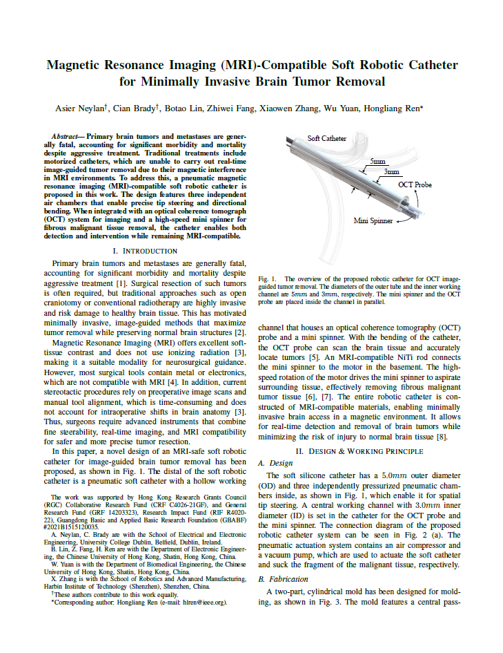
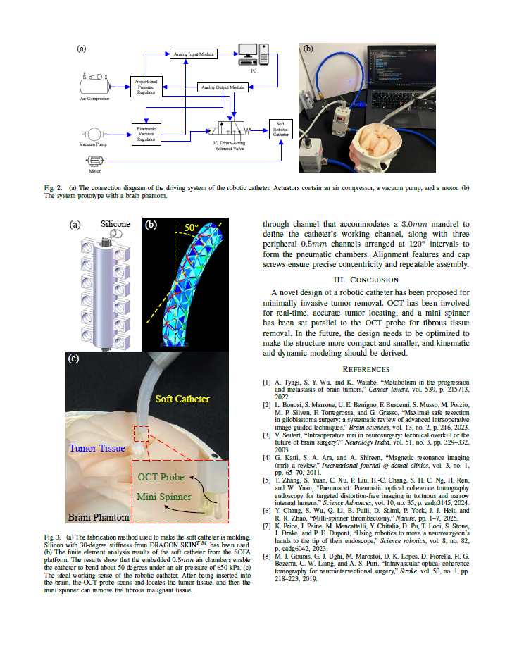

My time in CUHK was a huge learning experience. I learned about many of the challenges that come with research and how to overcome them. The unfortunate reality is that research can often times consist of monotonous tasks that can be difficult to stay motivated through, however, the end result is hugely rewarding.
I worked on a project that involved creating a soft robotic catheter that could be used with MRI machines to remove tumors. I learned a lot about the materials used in soft robotics and how to create a functional prototype. Originally we were going to use a 3D printer to create the catheter, but we ended up creating a mold and casting it in silicone. Had we known this would be more effective earlier, we could have saved a lot of time and resources. It seems obvious in hindsight, but at the time we were unsure of the best approach and what I have learned from this is that it is important to be flexible and adapt to the situation. Keeping an open mind and being willing to change your approach is crucial for success in any engineering context.
The main roles I had in this project were design and simulation of the catheter while my colleague focused on designing the pneumatic system. I used CAD software to create 3D models of the catheter and ran simulations in SOFA to test performance.
Overall, my experience at CUHK has taught me the importance of perseverance, adaptability, and collaboration in research. I am grateful for the opportunity to work with such talented individuals and to contribute to meaningful projects!
Following this is the research paper.

